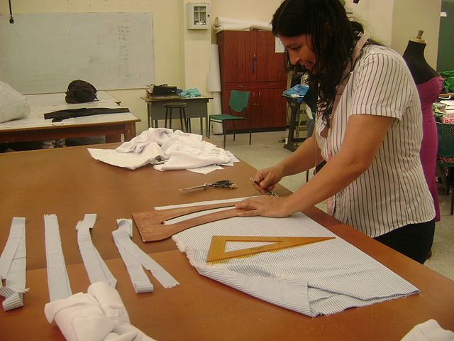

La triste realidad en que nos encontramos:

La población sin ingresos propios caracteriza la falta de autonomía ya que no cuenta con ninguna fuente de recursos monetarios (no percibe sueldos, jubilaciones, pensiones, transferencias monetarias de otros hogares ni del exterior, tampoco recibe transferencias sociales otorgadas por el gobierno, ni recursos producto de la renta de propiedades y no está asistiendo a la escuela) para cubrir necesidades propias y de otros miembros del hogar. En México, esta población se compone principalmente de mujeres. De acuerdo con la ENIGH (INEGI, 2018), la población sin ingresos propios fue de 13.8 millones (82.5% correspondió a mujeres y el resto a hombres). El porcentaje por sexo, entre la población con 13 años y más, muestra que el 36.6% de las mujeres no cuenta con ingresos propios, mientras que es sólo del 6.3% para los hombres. Lo anterior implica que poco más de una tercera parte de las mujeres dependen económicamente de otra persona.
Por otro lado, las mujeres y las niñas siguen sufriendo de forma desproporcionada la pobreza, la discriminación y la explotación. La discriminación de género implica que a menudo acaban desempeñando trabajos no seguros y mal pagados, y siguen siendo una pequeña minoría en puestos directivos. Otro aspecto a considerar es que el grueso de las tareas domésticas recae en las mujeres, por lo que suelen tener poco tiempo libre para aprovechar oportunidades económicas.
Impulso de la autonomía económica de las mujeres, es todo un reto:
Invertir en el empoderamiento económico de las mujeres contribuye directamente a la igualdad de género, la erradicación de la pobreza y el crecimiento económico inclusivo. Las mujeres aportan de manera significativa a las economías, ya sea en empresas, en el campo, o como emprendedoras. ONU Mujeres México pone especial énfasis en programas innovadores para impulsar la autonomía económica de las mujeres, considerando, entre sus prioridades a las trabajadoras migrantes y las emprendedoras rurales e indígenas. Igualmente trabaja para el desarrollo de sistemas públicos de respuesta a las necesidades de cuidado y para dar visibilidad a los aportes de las mujeres en la economía, en especial el trabajo no remunerado y su vínculo con la pobreza de las mujeres. Para alcanzar el empoderamiento económico de las mujeres, es necesario que se creen oportunidades de empleo digno y de calidad que garanticen que el trabajo proporciona a las mujeres ingresos que les permitan salir de la pobreza y aumentar su poder de decisión en otros ámbitos de su vida.
La política para la igualdad de género en su vertiente de empoderamiento y autonomía económica de las mujeres está llamada a ser, debido a su carácter transversal, una estrategia privilegiada para la articulació de políticas económicas de alto impacto social y las políticas sociales de alto impacto económico, dado quevincula como ninguna otra esfera del quehacer político, la vida cotidiana de la población y los esquemas productivos y oportunidades de empleo e ingreso, hasta ahora excluyentes, poco corresponsables con las necesidades de cuidado y de las cuidadoras.